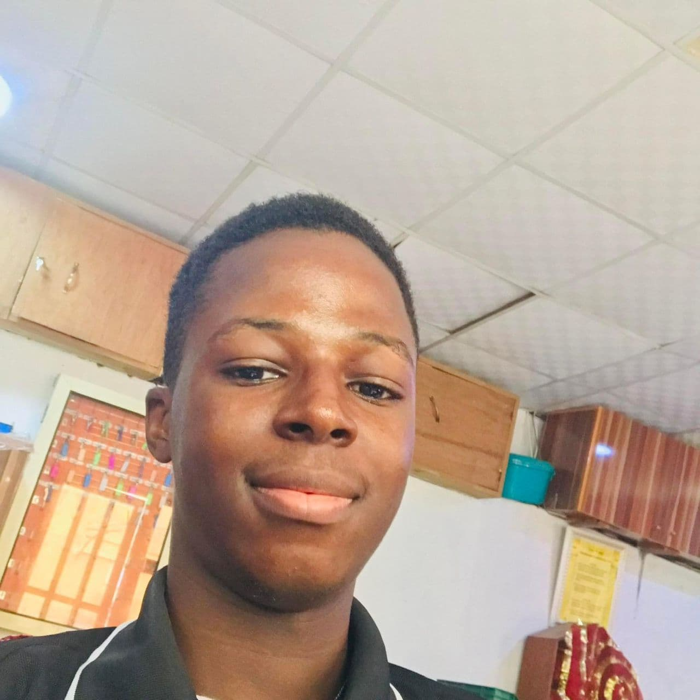

Isaac Ayomide | WDD 130
"Hello! I am Isaac Ayomide, a curious and hardworking student who loves learning new things and finding better ways to solve problems. I have a strong interest in data analysis, production planning, and inventory management because I enjoy working with numbers and making sense of data to improve processes. I am always eager to grow, both academically and personally, and I take pride in staying consistent and disciplined in everything I do. I enjoy collaborating with others, sharing ideas, and learning from different perspectives. My goal is to keep building my skills and use them to make a positive impact wherever I find myself.